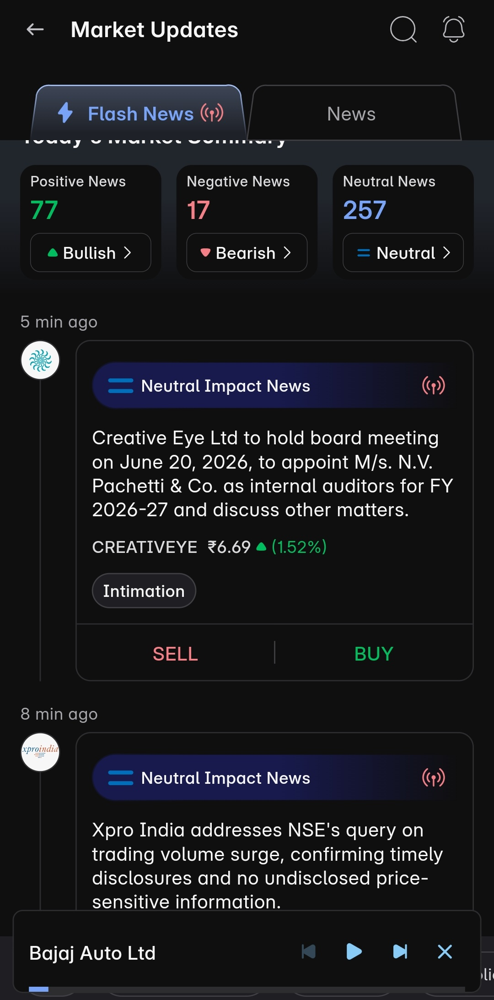
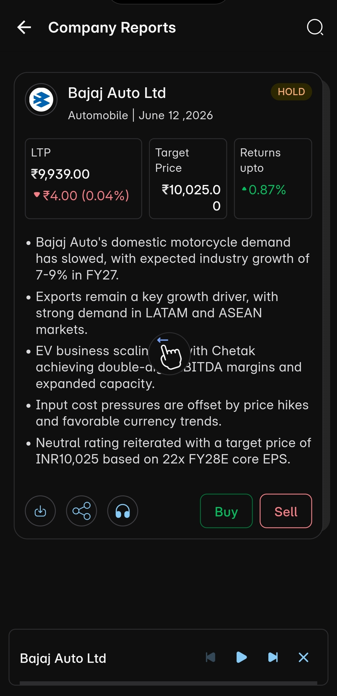
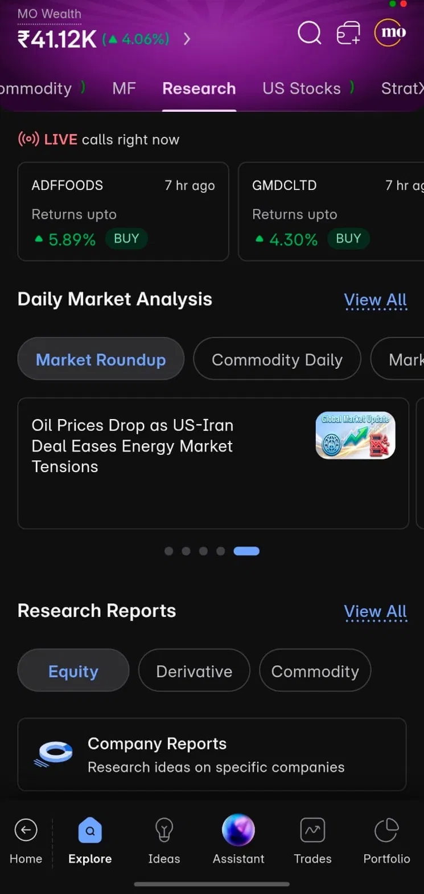
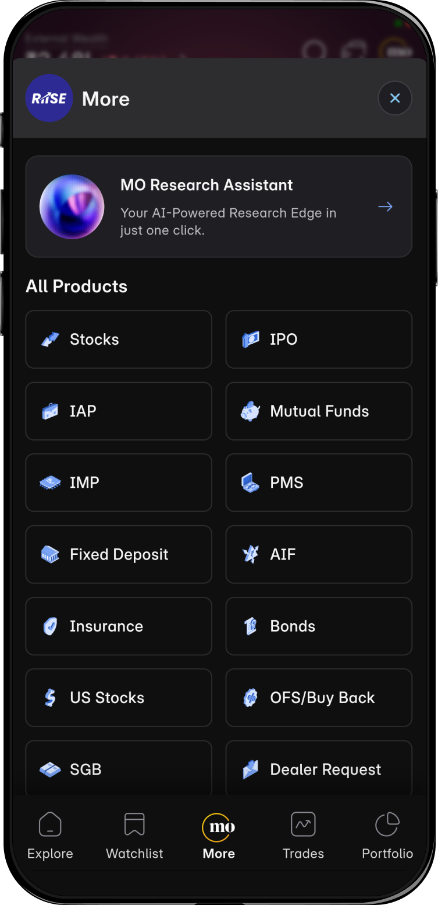
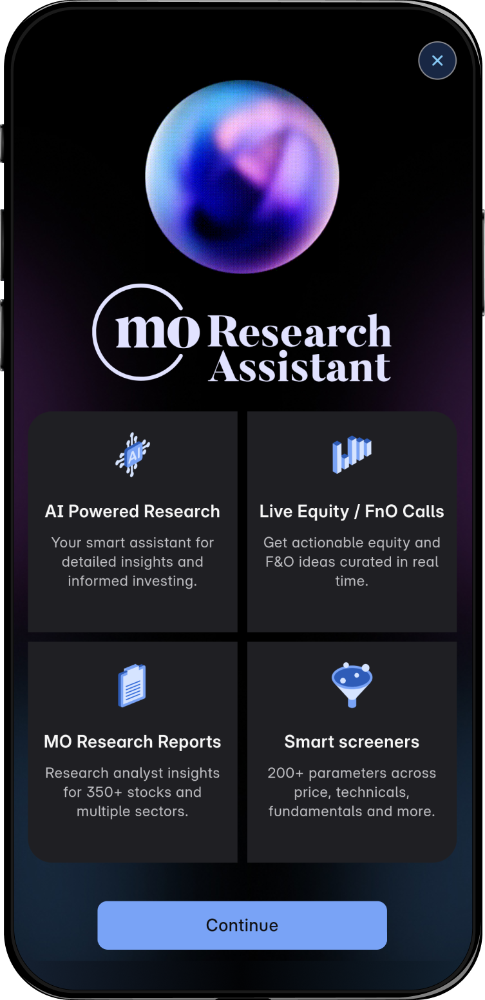
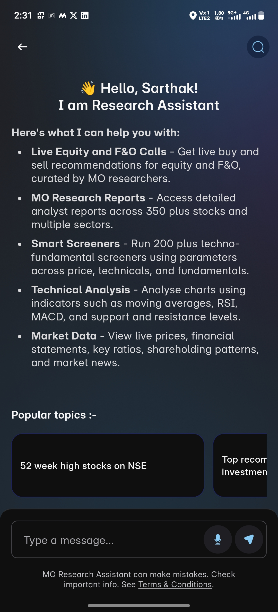
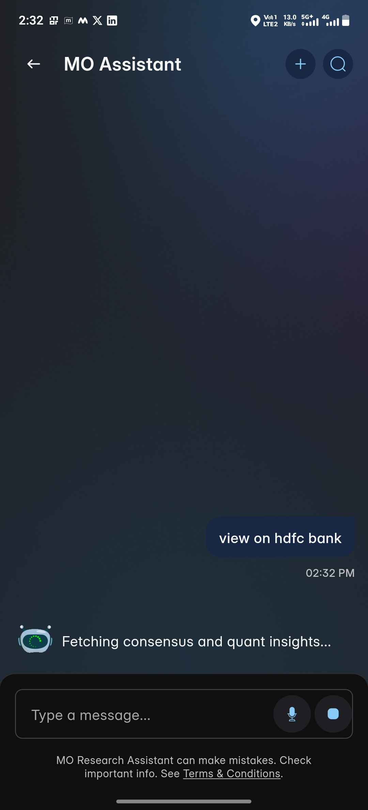
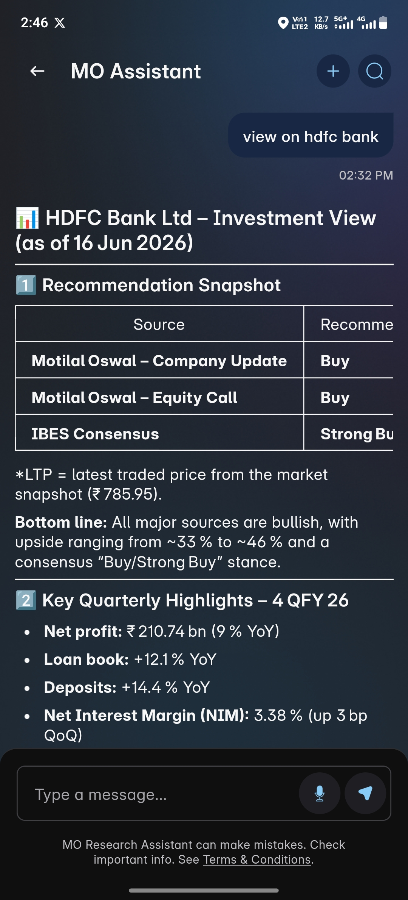

AI-Powered · Motilal Oswal · RIISE App · Live since January 2026
AI-powered research intelligence for India's retail investor — live buy/sell recommendations, analyst report summaries, and conversational market insights, all in one app.
The Problem
India has over 100 million demat accounts. But high-quality equity research (detailed, analyst-backed, conviction-rated) was locked behind 30-page PDFs, institutional language, and English-only delivery.
The gap was never the research. It was accessibility.
The MO Research Suite closes that gap for the first time inside a regulated brokerage context, turning static reports into conversational, real-time intelligence available to every retail investor.
Product 1
A dedicated, always-on research surface embedded inside the RIISE trading app. Powered by an automated Lambda-based LLM pipeline that processes every analyst report without human intervention.



Product 2
A multi-agent AI assistant invoked from the centre of the app's navigation. Not a chatbot — a reasoning engine with access to live data, 350+ stock reports, 200+ screeners, and technical analysis tools.


Product in Action
A user asks "view on HDFC Bank" in plain language. The assistant orchestrates across live data, analyst research, and consensus intelligence — returning a structured investment view, cited and validated.



Demo
Watch the MO Research Suite deliver live investment intelligence inside the RIISE trading app.
Performance Metrics
All figures reflect monthly run-rate. Product live since January 2026. Continuously monitored via live observability dashboard — evaluated by the Business Strategy team and presented at executive-level leadership reviews.
Franchise Testimonials
MO's top-producing franchise partners — experienced advisors with years of institutional research access — are among the product's strongest advocates.
Research Assistant has significantly improved the way we engage with our clients. Instead of spending hours gathering reports and market insights, our team is now able to provide quicker, more confident, and research-backed guidance to investors.
The platform has made financial research far more accessible for both our advisors and clients. Whether it is stock comparisons, sector outlook, or investment recommendations, the responses are detailed, accurate, and easy to understand.
Research Assistant has become a valuable support system for our day-to-day advisory activities. The ability to instantly access research reports, technical insights, news, and company analysis has helped our team respond faster and make discussions with clients more meaningful.
Independent Validation
A three-layer governance chain ensures every number cited is organisationally validated — not self-reported by the product team.
Independently evaluates all KPIs — order flow attribution, accuracy scores, engagement metrics — providing formal sign-off on reported outcomes.
Continuously monitors response accuracy against published analyst research, price targets, and sector theses. The 90%+ figure reflects ongoing review, not a one-time test.
Product KPIs are presented at executive-level leadership calls — the highest form of internal accountability in a regulated financial institution.
Top-producing MO franchises — highest-revenue distribution partners — have provided direct testimonials on client engagement impact.
Compliance & Architecture
Compliance is not a constraint retrofitted at the end — it is a design input from day one.
Responses are grounded in published analyst research, not independent AI inference.
No client-specific data is processed at the AI layer.
Client-facing models run on-premise — no user data is transmitted externally.
An independent large-scale model evaluates every generation before delivery.
Validates numerical accuracy and analyst-position alignment on every response.
Every response is fully traceable to its source analyst report.
A live monitoring dashboard tracks all agent decisions across the system.